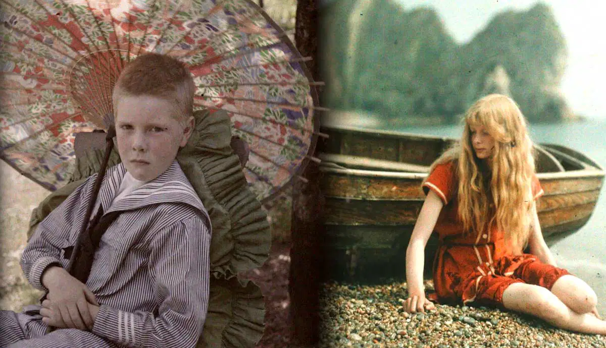
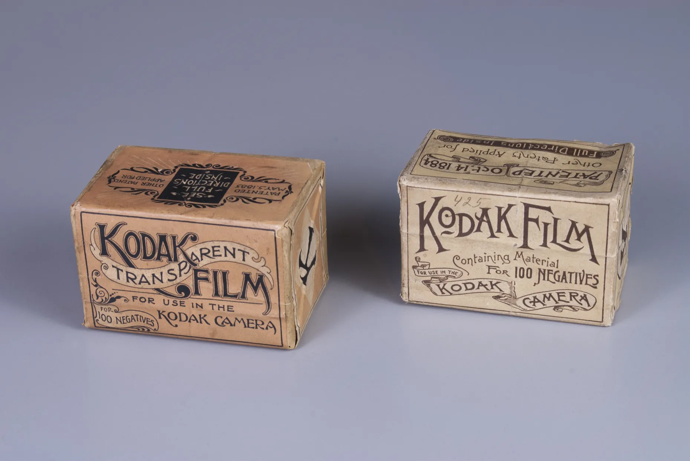
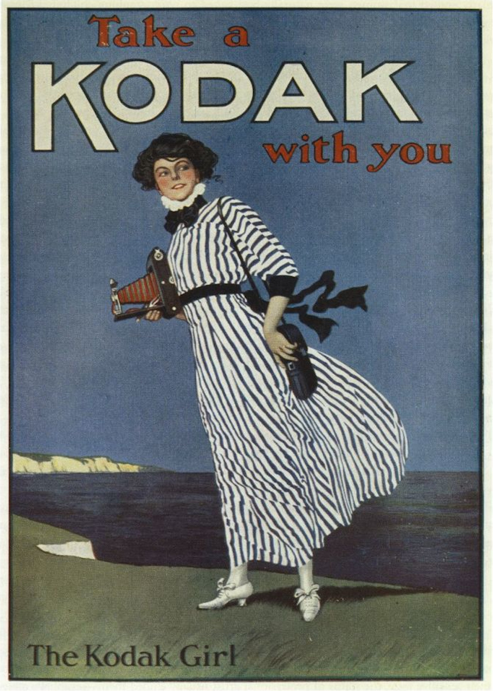
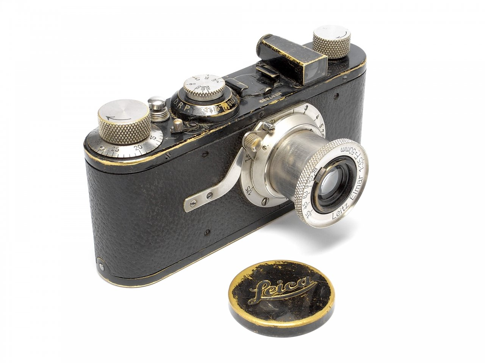
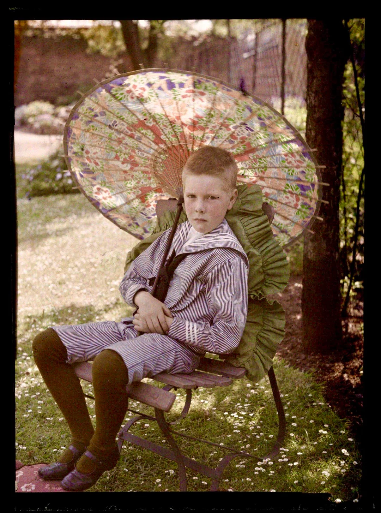
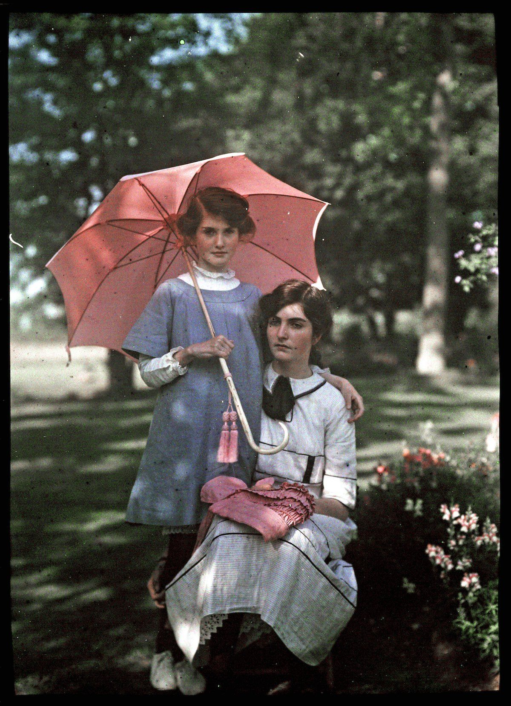

How 20th-Century Photography Evolved: 4 Techniques to Know
The world of 20th-century photography was filled with remarkable technical evolution. Many photographers captured the essence of the rapidly changing world.

After the invention of the first photographic process in 1826, photography initially developed as a medium for capturing portraits, landscapes, and city views. Thanks to the invention of various techniques, photography was subsequently used as a documentary tool to capture war scenes or fleeting moments of daily life. Although the medium initially was not perceived as an art form, members of the movement called Pictorialism tried to convince people otherwise. The invention of new photographic processes subsequently aided in giving photography a different, more artistic status. Here are the key techniques of 20th-century photography.
1. Technique of 20th Century Photography: 35- and 120mm Film

At the end of the 19th century, the world of photography witnessed the invention of several groundbreaking photographic techniques. Among these was the gelatine glass plate technique from 1871, which, due to its success, would remain in use until the early 1900s. Another significant invention was the first hand-held Kodak camera in 1888 by American entrepreneur George Eastman (1854-1932). The device inspired the rise of photography as we know it today. In addition to these innovations, the late nineteenth century is home to another major invention: flexible, transparent plastic film, which replaced the glass dry plates in 1889. In addition, many types of flexible film were developed in the decades after its invention.
Before delving further, let’s take a closer look at roll film. To begin, plastic film was made of nitrocellulose or celluloid and initially came in the form of a roll with a hundred exposures. Photographers could buy prepared glass plates in multitude, but the hundred exposures on a plastic roll made it even easier to take a series of photos. In addition, the film roll could be loaded onto a camera at once, which was a departure from the previous method of loading individual glass plates. Once the owner of a hand-held camera had exposed all of the hundred shots, the loaded camera would be sent back to the Kodak factory in Rochester. Here, the old roll was taken out for development, after which the camera was reloaded with a new roll and sent back to the customer. This way, he or she could already start taking new shots while waiting for the film to be developed.

The ease of the hand-held camera with plastic film made this device very popular amongst many new amateur photographers, who loved to take photos of daily life. Many family gatherings, picnics, graduations, and weddings were captured with this camera. Within a few years, Kodak photography had even become a national craze, and the word Kodak entered everyday speech in the USA. Advertisements further contributed to the popularity of the device. The combination of the image of a fashionably dressed young woman and the words Take a Kodak with you and The Kodak Girl marketed the camera as a fashionable accessory.
Kodak’s popularity subsequently sparked the development of different sizes of film rolls. The first type of plastic film developed by Eastman had a 120mm large format, which allowed for different frame sizes. In turn, Thomas Edison’s 1893 invention of the Kinetoscope, a device for showing basic film loops, marked the beginning of the use of 35mm film. The popularity of this film format was then boosted further by the French brothers Auguste and Louis Lumière’s adoption of it for their 1892 motion picture film camera, called the Cinématographe. By 1909, 35mm film had become the standard motion picture film. It quickly gained popularity and became known as a film needed for making still photography between 1905 and 1913.

As a result of the invention of film and the success of the handheld camera, the 20th century saw the rise of various brands and types of film, as well as different film cameras. Some of Kodak’s early film types were Cine Negative Film Type E and F from 1916 and 1917, and the 1921 Cine Positive Tinted Stock in colors like lavender, blue, and yellow. Subsequently, the introduction of the first three color film stocks in 1932, paved the way for the emergence of Kodachrome color film in 1935. This remarkable achievement marked the debut of the first commercially successful amateur color film in 16mm for motion pictures. Interestingly enough, the credit for this invention goes to two musicians, Leopold Mannes and Leopold Godowsky, who collaborated with Kodak in its development.
Apart from Kodak, the German company Agfa also developed a color film in 1936, which was called AGFACOLOR-NEU. After World War II, when the previously secret details of Agfa’s research became publicly available, other companies introduced color film based on similar fundamentals. The latter paved the way for the subsequent development of color film for still photography, which was manufactured not long after. Nonetheless, it was not until the 1970s, following a price decrease, that color film became widely adopted by the general public.

The invention of film also sparked the development of different film cameras. The first publicly available cameras that used 35mm cine-film were the Tourist Multiple19 from 1913 and the Simplex from 1914. However, the first commercially successful 35mm camera was designed by Oskar Barnack at the Ernst Leitz Optische Werke in Wetzlar, Germany. The prototype device of Barnack’s camera became known as the Ur-Leica, with ur meaning prime in German. After many prototype designs, the Leica-I camera was finally brought onto the market in 1925.
Some features of the Leica-I were an all-metal housing, a collapsible lens, and a focal-plane shutter. In addition, the Leica moved film horizontally, which increased the frame size of the vertically oriented cameras. After the Leica, the twentieth century saw the rise of many other 120mm and 35mm film cameras. Some iconic ones that you might know are the Mamiya 645 series, the Pentax 6×7, the Hasselblad 500 series, the Canon AE-1, and the Pentax K1000.
During the 20th century, numerous well-known photographers made their mark using 35mm and 120mm film. These include Vivian Maier, Steve McCurry, Ansel Adams, Imogen Cunningham, Diane Arbus, Saul Leiter, Lee Friedlander, Ernest Cole, and Ed van der Elsken. A century later, film photography is still in use. Many photographers and enthusiasts have rediscovered analog photography and are seeking the best cameras from the 1970s, 1980s, and 1990s.
2. The Autochrome

During the same period in which film photography took off, another photographic technique called autochrome was developed. The two people behind this method were the same Lumière brothers who boosted the use of 35mm film. The two patented the autochrome method in 1903, and in 1907, the commercial manufacturing of autochrome plates began at the Lumière Factory in Lyon, France.
The color photographic process of the autochrome involved a few steps. First, a glass plate was coated with a layer of sticky varnish and then dusted with a layer of randomly distributed, translucent potato-starch grains. These grains, which had been dyed red, green, and blue, were then mixed with fine black carbon dust and varnished once more. After this layer had dried, the plate was coated with a light-sensitive gelatine silver bromide or silver-iodine emulsion. Once dried, the plates could be inserted into a camera and exposed to light.
To create autochromes, photographers could use their existing cameras. The only thing they had to remember was to place the glass plate in the camera with the plain side towards the lens. The latter ensured that the light would first pass through the filter before reaching the sensitive emulsion. The filter, which was yellow, effectively counteracted the emulsion’s heightened sensitivity to blue light, resulting in a more accurate color rendering.

Following the start of commercial production, the first public demonstration of the autochrome technique took place on the 10th of June in 1907 at the office of the French newspaper L’Illustration. After this event, the Royal Photographic Society in London also demonstrated the autochrome technique. An event that, as the Amateur Photographer magazine reported, attracted so many people that the Society was almost unable to cope. As a result of this invention, many enthusiasts and photographers wanted to start taking photographs with the new technique. After all, the option to take color photographs had been the dream of many since the invention of photography and was a giant leap forward.
However, not everybody was able to immediately make use of this new invention, since demand far outstripped supply. By 1913, the Lumière Factory was producing 6,000 plates a day. As a result of its popularity, exhibitions like the annual Salon included many autochrome photographs. Some of the autochrome photographers were Edward Steichen, Etheldreda Laing, Alvin Langdon Coburn, James Craig Annan, and Baron Adolf de Meyer.

Nowadays, the Victoria and Albert Museum in London holds more than 2,500 autochromes, captured by both professionals and amateurs. Regrettably, the photographs, due to their extreme light sensitivity, can rarely be seen, let alone displayed in exhibitions. Furthermore, technological advancements such as the invention of film and, particularly, color film, eventually made the autochrome technique obsolete. Nevertheless, for a few decades, it served as a fantastic technique for producing color photographs.
3. The Polaroid
Read the full article on www.thecollector.com and discover the two remaining photography techniques of the 20th century.